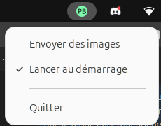
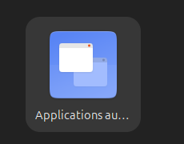
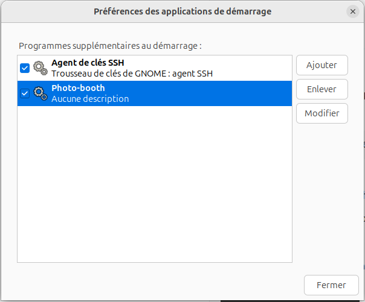
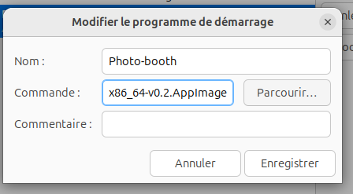

Windows
Supporté : Windows 10 et supérieur
Télécharger
Installation
Téléchargez le fichier.zip
Extrayez-le dans le dossier de votre choix
Lancez Photo-booth.exe
Message de sécurité Windows
Au premier lancement, Windows affichera un message de sécurité car l'application n'est pas signée numériquement.
Pour passer ce message :
- Cliquez sur "Informations complémentaires"
- Puis sur "Exécuter quand même"
Ce message est normal. L'application est sûre.
Linux
Distribution recommandée : Ubuntu, Debian ...
Télécharger
Installation
Téléchargez le fichier AppImage, puis rendez-le exécutable :
En ligne de commande :
chmod +x Photo-booth-x86_64-v0.2.AppImage
Interface graphique :
- Clic droit sur le fichier téléchargé
- Propriétés > Permissions
- Cochez "Autoriser l'exécution du fichier comme un programme"
Lancer au démarrage
Il y a une erreur avec cette option pour le moment, Voici comment la réparer :

Activer l'option 'Lancer au démarrage'

Ouvrir l'application 'Application au démarage'

Editer la configuration de photo-booth

Remplacer l'emplacement par le fichier AppImage de l'application
Enregistrer